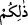

Peygamber (s.a.) buyurdu: “Hiç kimseyi sadece ameli kurtaramayacaktır.” “Seni de
mi ya Rasûlallah?” denilince: “Rabbimin fazlı yetişmezse benim amelim de beni
kurtaramaz”[269] buyurur. Hadîsten de anlaşılacağı üzere kurtuluş, sadece Allah’ın
yardımıyla mümkündür.
Bu îzâha göre âyetteki ( __WORD__ ) kelimesi “nefsin sıfatlarının kalbi ve rûhu istîlâ etmesi”
anlamınadır. Bu duruma göre mânâ şöyle olur: Nefsin sıfatlarının, kalbi ve rûhu istîlâ
etmesi sizin büyük bir belâ, hayır ve şerle imtihan edilmenizdir. Allah, kime hidâyet
eder, durumunu düzeltirse duâsını kabûl ederek kurtuluşa erdirir; düşmanlarını da yok
eder. Kimi de saptırır, terkederse, o kimse dünyâya meyleder, hevâsına tâbi olmada
ifrâta düşer.
Ayrıca âyet, kula isâbet eden kötülüklerin ve iyiliklerin onu imtihan etmeye yönelik
olduğuna işâret eder. Kula düşen iyi şeylere şükretmek; belâlara da sabretmektir.
Nitekim Hâfız der ki:
Eğer Hakk, huzûr-ı mâneviyesine çağırırsa, lütuf olur.
Eğer kahrıyla kovacak olursa elimizden ne gelir?
Allah Teâlâ, kullarına bol rızık, sağlık ve sıhhat vermekte ve bu nimetlerine karşılık,
onlardan kulluk yapmalarını beklemektedir. Eğer kullar istenileni yapmaktan
kaçınırlarsa bu sefer bolluk ve darlıkla imtihan eder. Umulur ki kullar, Allah’a
yönelirler. Çünkü Allah’ın murâdı, kullarının isteyerek veya istemeyerek de olsa,
kendisine dönmeleridir. İsteyerek dönmek, ahrârın; zorla dönmek de ağyârın işidir.
Ravzatü’l-ahyâr’da anlatıldığına göre Muhammed b. Hasan’ın arkadaşlarından
Dâvud b. Reşîd şöyle demiştir: “Bir gece ibâdete kalkmıştım ki, soğuktan üşüdüm ve
çıplaklığıma ağladım. Sonra uyumuşum, rüyâmda birisi bana şöyle diyordu:
“Başkalarını uyuttuk, seni ise kulluk için ayağa diktik. Bunun için mi ağlıyorsun?”
Dâvud, bundan sonra hiç uyumamıştır. Mesnevî’de denilmiştir ki:
Hakk vergisi sırt ağrısıyla uykudan
Gece yarısı kıvranarak sıçrarım,
Derdler Hakk’ın lütfunun eseridir ki, ben o sâyede,
Bütün gece su sığırı gibi uyumaktan kurtulurum.
Rivâyet edilir ki, Cenâb-ı Allah, peygamberlerinden birine şöyle vahyetti: “Kuluma
belâ verdim. Belâyı kaldırmam için bana duâ etti, ben de duâya icâbette gecikince, beni
şikâyet etti. Dedim ki: Ey kulum, kendisiyle sana merhamet edeceğim bir şeyden dolayı,
sana nasıl acıyabilirim?”
Bir kimse üzerinden Allah’ın lütfunun kesildiğini zannederse, bu aklî, tabîî ve şer’î
konulardaki bakış eksikliğinden kaynaklanmaktadır.
Aklî bakış noksanlığı şudur: Hiçbir belâ yoktur ki akıl, ondan daha büyüğünün
olduğuna hükmetmesin. Bütün dünyevî belâların bir kâfirde toplandığını, âhırette